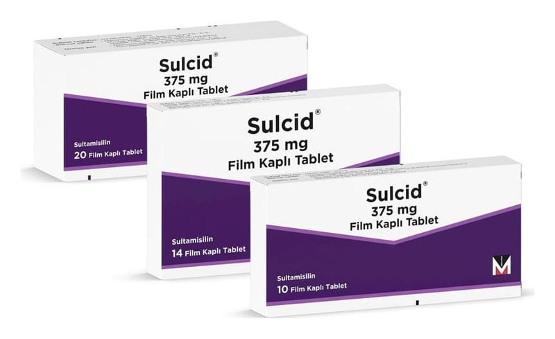

Sulcid 375 mg Film Kaplı Tablet, 20 Adet

Ne için kullanılır
KT · Bölüm 1SULCİD, ağızdan alınan, sulbaktam ve ampisilin içeren bir antibiyotiktir.
Beyaz kapsül şeklinde film kaplı tabletlerdir.
SULCİD alüminyum folyo blisterde 10, 14 ve 20 tablet içeren kutular ile kullanıma sunulmaktadır.
SULCİD, aşağıdaki durumlarda kullanılmaktadır:
SULCİD, belirli mikropların neden olduğu sinüs iltihabı, orta kulak iltihabı, bademcik iltihabı dahil olmak üzere üst solunum yolu enfeksiyonları; akciğer iltihabı, bronşit dahil olmak üzere alt solunum yolu enfeksiyonları; idrar yolu ve böbrek enfeksiyonları; deri ve yumuşak doku enfeksiyonları ve bel soğukluğu enfeksiyonlarının tedavisinde kullanılmaktadır.